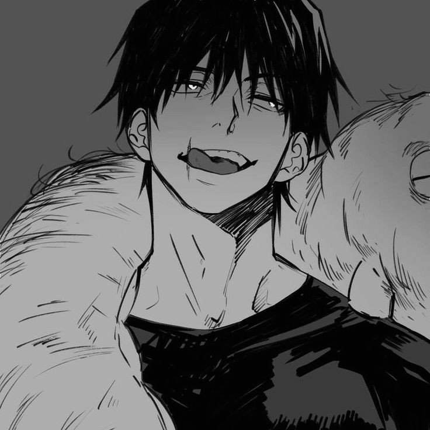

PRECAUCIÓN: POSIBLES SPOILERS
Habilidades principales
Habilidades mostradas en el anime Jujutsu Kaisen
- Maldición Celestial (Usario Divino):
- Maldición Celestial de Restrinción Física - 'La propia malción otorga al usuario una fuerza sobrehumana a cambio de no producir energía maldita.'
- Contrato Vinculante - 'Contrato impuesto sobre Toji para poder acceder a la propia Maldición Celestial.'
- Habilidades del Clan Zenin - 'El cual abandonó al no poseer energía maldita pero del que aprendió numerosas técnicas y artes marciales con las que potenciar su Maldición Celestial.'
- Técnica Maldita - 'La Maldición Almacenadora de Cosas es el "gusano" maldición que tiene como mascota, la cual almacena y oculta todo tipo de armas malditas.'